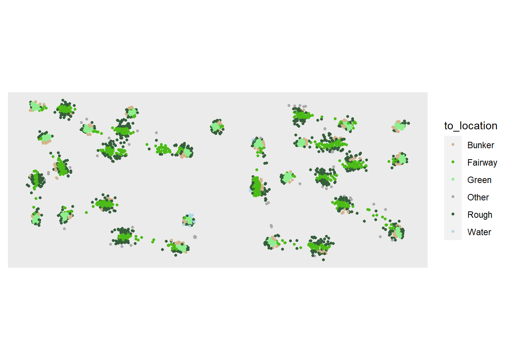

library(tidyverse)Last year, I found some sample data while reading about PGA Shotlink1. I decided to put together a series of posts using this data. This first post will cover some simple data cleaning and visualization.
The sample contains 4 delimited text files: event-level, hole-level, round-level, and shot-level. I’ll focus on the shot-level data in this post.
shot_level <- read.delim(file ='shotlink_sample/StrokeLevelTOURChamp.txt')
str(shot_level)'data.frame': 8422 obs. of 38 variables:
$ tour_code : chr "R" "R" "R" "R" ...
$ tour_description : chr "PGA TOUR" "PGA TOUR" "PGA TOUR" "PGA TOUR" ...
$ year : int 2011 2011 2011 2011 2011 2011 2011 2011 2011 2011 ...
$ tourn_num : int 410 410 410 410 410 410 410 410 410 410 ...
$ Player.. : int 1810 1810 1810 1810 1810 1810 1810 1810 1810 1810 ...
$ Course.. : int 688 688 688 688 688 688 688 688 688 688 ...
$ Permanent.Tournament.. : int 60 60 60 60 60 60 60 60 60 60 ...
$ Player.First.Name : chr "Phil" "Phil" "Phil" "Phil" ...
$ Player.Last.Name : chr "Mickelson" "Mickelson" "Mickelson" "Mickelson" ...
$ Round : int 1 1 1 1 1 1 1 1 1 1 ...
$ Tournament.Name : chr "TOUR Championship by Coca-Cola" "TOUR Championship by Coca-Cola" "TOUR Championship by Coca-Cola" "TOUR Championship by Coca-Cola" ...
$ Course.Name : chr "East Lake GC" "East Lake GC" "East Lake GC" "East Lake GC" ...
$ Hole : int 1 1 1 1 2 2 3 3 3 3 ...
$ Hole.Score : int 4 4 4 4 2 2 4 4 4 4 ...
$ Par.Value : int 4 4 4 4 3 3 4 4 4 4 ...
$ Yardage : int 424 424 424 424 214 214 387 387 387 387 ...
$ Shot : int 1 2 3 4 1 2 1 2 3 4 ...
$ Shot.Type.S.P.D. : chr "S" "S" "S" "S" ...
$ X..of.Strokes : int 1 1 1 1 1 1 1 1 1 1 ...
$ From.Location.Scorer. : chr "Tee Box" "Primary Rough" "Green" "Green" ...
$ From.Location.Laser. : chr "" "Right Rough" "Unknown" "Unknown" ...
$ To.Location.Scorer. : chr "Primary Rough" "Green" "Green" "" ...
$ To.Location.Laser. : chr "Right Rough" "Unknown" "Unknown" "" ...
$ Distance : int 10677 4932 326 39 7727 231 10069 3309 150 14 ...
$ Distance.to.Pin : int 15444 4788 281 39 7812 231 13464 3440 132 14 ...
$ In.the.Hole.Flag : chr "N" "N" "N" "Y" ...
$ Around.the.Green.Flag : chr "N" "N" "N" "N" ...
$ X1st.Putt.Flag : chr "" "" "Y" "" ...
$ Distance.to.Hole.after.the.Shot: int 4788 281 39 0 231 0 3440 132 14 0 ...
$ Time : int 1255 1300 1304 1305 1307 1312 1315 1320 1324 1324 ...
$ Lie : chr "Good" "N/A" "Good" "Good" ...
$ Elevation : chr "With" "With" "With" "With" ...
$ Slope : chr "Level" "Level" "Level" "Level" ...
$ X.Coordinate : chr "9,093.97" "8,683.75" "8,697.45" "0" ...
$ Y.Coordinate : chr "9,859.90" "9,868.71" "9,845.29" "0" ...
$ Z.Coordinate : num 480 504 504 0 491 ...
$ Distance.from.Center : int 562 232 33 0 214 0 127 15 2 0 ...
$ Distance.from.Edge : int 126 25 199 0 347 0 344 32 140 0 ...This table has a ton of interesting fields to explore, but first I want to clean up the column names - the janitor package makes this really easy.
shot_level_clean <- shot_level %>%
janitor::clean_names() %>%
rename(num_of_strokes = x_of_strokes,
first_putt_flag = x1st_putt_flag)
shot_level_clean %>%
colnames() %>%
head(10) [1] "tour_code" "tour_description" "year"
[4] "tourn_num" "player" "course"
[7] "permanent_tournament" "player_first_name" "player_last_name"
[10] "round" Next, I’d like to get a feel for the scope of the data.
#How many tournaments/rounds?
shot_level_clean %>%
select(year, tournament_name, round) %>%
distinct() year tournament_name round
1 2011 TOUR Championship by Coca-Cola 1
2 2011 TOUR Championship by Coca-Cola 2
3 2011 TOUR Championship by Coca-Cola 3
4 2011 TOUR Championship by Coca-Cola 4#How many players?
shot_level_clean %>%
select(player,
player_first_name,
player_last_name) %>%
distinct() player player_first_name player_last_name
1 1810 Phil Mickelson
2 2206 David Toms
3 6527 Steve Stricker
4 6567 Vijay Singh
5 20645 John Senden
6 21731 Fredrik Jacobson
7 21878 Mark Wilson
8 21961 Charles Howell III
9 22046 Geoff Ogilvy
10 22371 Aaron Baddeley
11 22405 Justin Rose
12 23108 Matt Kuchar
13 23623 Bo Van Pelt
14 23983 Luke Donald
15 24357 K.J. Choi
16 24502 Adam Scott
17 24663 Y.E. Yang
18 24781 Hunter Mahan
19 24924 Bill Haas
20 24925 Jonathan Byrd
21 25686 Jason Dufner
22 25804 Bubba Watson
23 26476 Chez Reavie
24 27095 Nick Watney
25 27649 Brandt Snedeker
26 28089 Jason Day
27 29221 Webb Simpson
28 30925 Dustin Johnson
29 31323 Gary Woodland
30 33141 Keegan Bradley#Player scores?
shot_level_clean %>%
group_by(player,
player_first_name,
player_last_name,
round) %>%
summarize(shots = n(),
.groups = "keep") %>%
ungroup() %>%
mutate(round = paste0("round_",round)) %>%
pivot_wider(names_from = round,
values_from = shots) %>%
as.data.frame() %>%
mutate(final_score = round_1 + round_2 + round_3 + round_4) %>%
arrange(final_score) %>%
select(-player, -player_first_name) %>%
head() player_last_name round_1 round_2 round_3 round_4 final_score
1 Mahan 67 68 66 71 272
2 Donald 66 68 70 69 273
3 Choi 68 65 70 70 273
4 Haas 68 67 70 68 273
5 Baddeley 68 70 64 73 275
6 Scott 67 65 75 68 275At first glance, the data looks straightforward: one row for every stroke in the 2011 FedEx Cup Playoffs, with Hunter Mahan defeating the field of 30 with a final score of 272. However, a quick Google search shows that Bill Haas actually won the tournament in a playoff over Hunter Mahan. Referencing the docs, the number of strokes assessed actually comes from the # of Strokes2 column (renamed to num_of_strokes above) to account for drops and penalties. Adjusting the code above:
shot_level_clean %>%
group_by(player,
player_first_name,
player_last_name,
round) %>%
summarize(shots = sum(num_of_strokes),
.groups = "keep") %>%
ungroup() %>%
mutate(round = paste0("round_",round)) %>%
pivot_wider(names_from = round,
values_from = shots) %>%
as.data.frame() %>%
mutate(final_score = round_1 + round_2 + round_3 + round_4) %>%
arrange(final_score) %>%
select(-player, -player_first_name) %>%
head() player_last_name round_1 round_2 round_3 round_4 final_score
1 Mahan 67 68 66 71 272
2 Haas 68 67 69 68 272
3 Baddeley 68 69 64 72 273
4 Donald 66 68 70 69 273
5 Choi 68 65 70 70 273
6 Howell III 67 71 68 68 274These scores match the round-level scores on the Wikipedia page, which is good enough for me.
Next - I want to take a look at the x/y/z coordinate data. The docs give definitions for these fields:
The X coordinate in an X/Y/Z grid system used by lasers to pinpoint the ball when the shot ends. The value is zeros for the shot that finishes in the hole. The numbers in the grid system represent feet.
The Y coordinate in an X/Y/Z grid system used by lasers to pinpoint the ball when the shot ends. The value is zeros for the shot that finishes in the hole. The numbers in the grid system represent feet.
The Z coordinate in an X/Y/Z grid system used by lasers to pinpoint the ball when the shot ends. The value is zeros for the shot that finishes in the hole. The numbers in the grid system represent feet, and ‘Z’ is the vertical component of the position.
The shot that finishes in the hole will get 0 values, but these definitions don’t indicate whether the coordinates are relative to each hole or the overall course. Plotting the shots should help clear this up. Additionally, I need to convert the coordinate columns from character to numeric .
library(ggplot2)shot_level_clean %>%
mutate(x = str_replace_all(string = x_coordinate,
pattern = ",",
replacement = "")) %>%
mutate(y = str_replace_all(string = y_coordinate,
pattern = ",",
replacement = "")) %>%
mutate(z = str_replace_all(string = z_coordinate,
pattern = ",",
replacement = "")) %>%
mutate(x = as.numeric(x),
y = as.numeric(y),
z = as.numeric(z)) %>%
ggplot(mapping = aes(x = x,
y = y)) +
geom_point()The non-zero shot coordinates look like a golf course, so I think it makes sense to set the 0 values to NA since the coordinates to not appear to match the grid system.
shot_level_clean_coords <- shot_level_clean %>%
mutate(x = str_replace_all(string = x_coordinate,
pattern = ",",
replacement = "")) %>%
mutate(y = str_replace_all(string = y_coordinate,
pattern = ",",
replacement = "")) %>%
mutate(z = str_replace_all(string = z_coordinate,
pattern = ",",
replacement = "")) %>%
mutate(x = as.numeric(x),
y = as.numeric(y),
z = as.numeric(z)) %>%
mutate(x = ifelse(x == 0,NA,x),
y = ifelse(y == 0,NA,y),
z = ifelse(z == 0,NA,z)) %>%
select(-x_coordinate,
-y_coordinate,
-z_coordinate)
shot_level_clean_coords %>%
filter(!is.na(x)) %>%
mutate(hole = factor(hole, ordered = T)) %>%
ggplot(mapping = aes(x = x,
y = y,
color = hole)) +
geom_point() +
coord_equal() +
theme(axis.text = element_blank(),
axis.ticks = element_blank(),
axis.title = element_blank(),
panel.background = element_blank())Definitely looks like a golf course, especially when you overlay it on top of the Google Maps view of East Lake Golf Club in Atlanta:

Next I’d like to take a look at the cut3 information for each shot. The table has two columns with this information:
To Location (Scorer): General location from which the shot hit ended as recorded by the walking scorer
To Location (Laser): Enhanced location from which the shot hit ended as recorded by a laser device which tracks ball position using coordinates on a course map
shot_level_clean_coords %>%
filter(!is.na(x)) %>%
group_by(to_location_laser,
to_location_scorer) %>%
summarize(rows = n(),
.groups = "keep") %>%
as.data.frame() %>%
arrange(desc(rows)) to_location_laser to_location_scorer rows
1 Unknown Green 3548
2 Left Fairway Fairway 578
3 Right Fairway Fairway 550
4 Left Rough Primary Rough 436
5 Right Rough Primary Rough 401
6 Right Intermediate Intermediate Rough 145
7 Left Intermediate Intermediate Rough 112
8 Unknown Fairway Bunker 92
9 Right Green Side Bunker Green Side Bunker 77
10 Right Front Green Side Bunker Green Side Bunker 66
11 Front Left Green Side Bunker Green Side Bunker 60
12 Left Green Side Bunker Green Side Bunker 47
13 Front Center Green Side Bunker Green Side Bunker 34
14 Unknown Tree Outline 24
15 Unknown Water 23
16 Unknown Unknown 20
17 Unknown Water Drop 13
18 Left Rear Green Side Bunker Green Side Bunker 3
19 Left Fairway Fringe 2
20 Right Fairway Fringe 2
21 Right Rear Green Side Bunker Green Side Bunker 1
22 Unknown Dirt Outline 1The columns seem to match up pretty well, but I’d like to consolidate them into a more general `to_location_cut` column.
shot_level_clean_coords_cut <- shot_level_clean_coords %>%
mutate(to_location_cut = case_when(to_location_scorer %in% c('Fairway','Fringe') ~ 'fairway',
to_location_scorer %in% c('Fairway Bunker','Green Side Bunker') ~ 'bunker',
to_location_scorer %in% c('Intermediate Rough','Primary Rough') ~ 'rough',
to_location_scorer == 'Green' ~ 'green',
to_location_scorer == 'Water' ~ 'water',
is.na(x) ~ 'hole',
T ~ 'other'))
shot_level_clean_coords_cut %>%
filter(!is.na(x)) %>%
group_by(to_location_laser,
to_location_scorer,
to_location_cut) %>%
summarize(rows = n(),
.groups = "keep") %>%
as.data.frame() %>%
arrange(desc(rows)) to_location_laser to_location_scorer to_location_cut rows
1 Unknown Green green 3548
2 Left Fairway Fairway fairway 578
3 Right Fairway Fairway fairway 550
4 Left Rough Primary Rough rough 436
5 Right Rough Primary Rough rough 401
6 Right Intermediate Intermediate Rough rough 145
7 Left Intermediate Intermediate Rough rough 112
8 Unknown Fairway Bunker bunker 92
9 Right Green Side Bunker Green Side Bunker bunker 77
10 Right Front Green Side Bunker Green Side Bunker bunker 66
11 Front Left Green Side Bunker Green Side Bunker bunker 60
12 Left Green Side Bunker Green Side Bunker bunker 47
13 Front Center Green Side Bunker Green Side Bunker bunker 34
14 Unknown Tree Outline other 24
15 Unknown Water water 23
16 Unknown Unknown other 20
17 Unknown Water Drop other 13
18 Left Rear Green Side Bunker Green Side Bunker bunker 3
19 Left Fairway Fringe fairway 2
20 Right Fairway Fringe fairway 2
21 Right Rear Green Side Bunker Green Side Bunker bunker 1
22 Unknown Dirt Outline other 1Next - I want to plot `to_location_cut` to see how it looks.
cut_colors = c('bunker'='tan',
'fairway'='#4CBB17',
'green'='#90EE90',
'rough'='#355E3B',
'other'='red',
'water'='lightblue')
shot_level_clean_coords_cut %>%
filter(!is.na(x)) %>%
mutate(hole = factor(hole, ordered = T)) %>%
ggplot(mapping = aes(x = x,
y = y)) +
geom_point(mapping = aes(color = to_location_cut),
size = 1) +
coord_equal() +
scale_color_manual(values = cut_colors) +
theme(axis.text = element_blank(),
axis.ticks = element_blank(),
axis.title = element_blank(),
panel.grid = element_blank())
shot_level_clean_coords_cut %>%
filter(!is.na(x)) %>%
filter(hole == 1) %>%
mutate(hole = factor(hole, ordered = T)) %>%
ggplot(mapping = aes(x = x,
y = y)) +
geom_point(mapping = aes(color = to_location_cut),
size = 2) +
coord_equal() +
scale_color_manual(values = cut_colors) +
labs(title = "1st Hole") +
theme(axis.text = element_blank(),
axis.ticks = element_blank(),
axis.title = element_blank(),
panel.grid = element_blank())
Lastly, I’d like to add columns that indicate how many strokes are remaining for the player on the hole, since it does not appear like they are in the current data set.
strokes_remaining <- shot_level_clean_coords_cut %>%
group_by(player,
hole,
round) %>%
arrange(player,
round,
hole,
shot) %>%
mutate(strokes_rolling = cumsum(num_of_strokes)) %>%
mutate(strokes_remaining_before_shot = hole_score - strokes_rolling + 1,
strokes_remaining_after_shot = hole_score - strokes_rolling) %>%
ungroup() %>%
mutate(yards_out_after_shot = distance_to_hole_after_the_shot/36,
yards_out_before_shot = distance_to_pin/36) %>%
as.data.frame()
strokes_remaining %>%
filter(hole == 1,
round == 1,
player == 24924) %>%
select(shot,
strokes_rem_before = strokes_remaining_before_shot,
yards_out_before = yards_out_before_shot,
strokes_rem_after = strokes_remaining_after_shot,
yards_out_after = yards_out_after_shot) shot strokes_rem_before yards_out_before strokes_rem_after yards_out_after
1 1 4 429.000000 3 116.444444
2 2 3 116.444444 2 10.722222
3 3 2 10.722222 1 1.194444
4 4 1 1.194444 0 0.000000strokes_remaining %>%
filter(!is.na(x)) %>%
filter(hole == 1) %>%
mutate(strokes_remaining_after_shot = factor(strokes_remaining_after_shot,
ordered = T)) %>%
ggplot(mapping = aes(x = x,
y = y,
color = strokes_remaining_after_shot)) +
geom_point(size = 3) +
coord_equal() +
labs(title = "1st Hole") +
theme(axis.text = element_blank(),
axis.ticks = element_blank(),
axis.title = element_blank(),
panel.grid = element_blank())saveRDS(object = strokes_remaining, file = "shot_level.rds")
saveRDS(object = cut_colors, file = "cut_colors.rds")